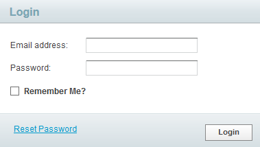
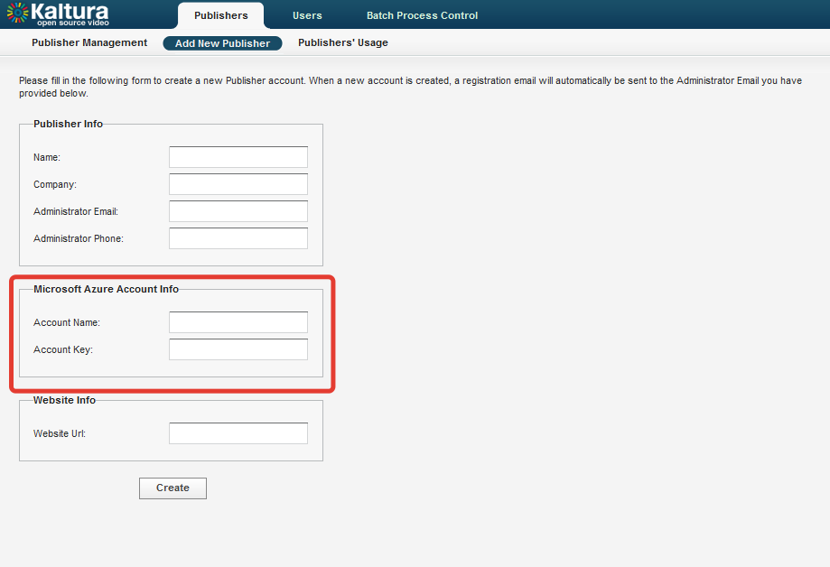
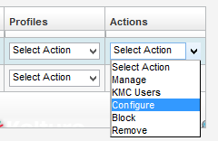
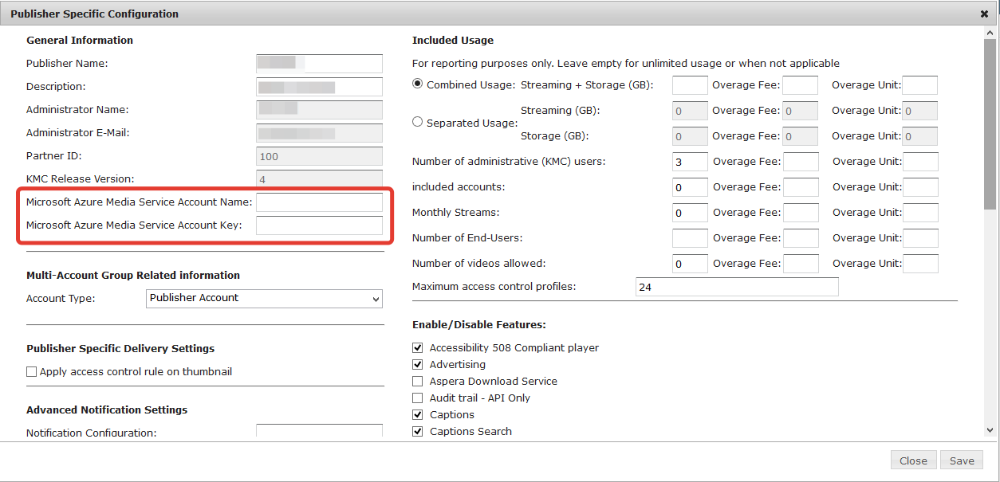

Kaltura Server on Azure Admin Console
User Manual
Preface
This manual describes the features and functions of the Admin Console for Kaltura Server on Microsoft Azure.
Login to Admin Console
To access the Kaltura Server Admin Console, browse http://<you_domain>/admin_console/. Provide your system administrator credentials (created during installation). Press “Login” button.
Publisher Management
Add New Publisher
To upload, convert and publish content using Kaltura Server on Azure, you will need to create a new publisher. Click on the “Add New Publisher” option within the “Publishers” tab.
Please note the request for “Microsoft Azure Account Info” within this page. Input your Microsoft Azure Media Service credentials or leave it empty. Publisher can also specify these credentials from the Kaltura Management Console (KMC) later.
Fill out the remainder of this form and click “Create”.
Publisher Management
This page contains a list of publishers. Here you can set Microsoft Azure Media Services credentials for an existing publisher.
- Select “Configure” from “Actions” drop down menu. 
- You will then be directed to this window to provide the Microsoft Azure Media Service Account Name and Microsoft Azure Media Service Account Key for this instance. 
- Click “Save” when finished.
Features Removed
The Microsoft Azure Platform Admin Console differs from the Kaltura CE Admin Console in that it contains additional settings to enable integration with Microsoft Azure Media Services. We strongly recommend that you use the Microsoft Azure Management Portal to monitor the load on your server and Media Services.
Some other noteworthy differences:
Included in Microsoft Azure:
- Microsoft Azure Media Services credentials input fields at Publisher configuration form
- Microsoft Azure Media Services credentials input fields at Add New Publisher form
Not included in Microsoft Azure:
- UI Confs (would be implemented in the next version)
- Monitoring (you may use Microsoft Azure Portal for monitoring the VM, “MONITOR” tab under VM details)
- Developer (would be implemented in the next version)
- “Service Packages” section in publisher configuration (Kaltura cloud specific options useless at CE version)
-
Publisher profiles
- Widgets (would be implemented in the next version)
- Remote Storage (incompatible with approach to store all media at Microsoft Azure)
- Distribution Profiles (would be implemented in the next version)
- Generic Providers (would be implemented in the next version).